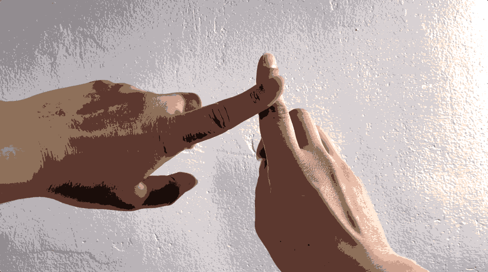

Through a small rhythmic landscape, find patterns that catch your fancy. Find the small stories behind them.
Poor fly, inevitably stuck in the same loop.
A pattern then that signals an anxious excitement, it's contagious.
The fidgeting stops.
However, all dances must come to an end, as we cross the street and it watches us flee.
And then it flies away.
Thus the pattern is broken when I begrudgingly arise and decide it is.
It did not work.
It is quite an intimate pattern, one of equal sharing.
The pattern doesn't change much, to the detriment of the children. They try to go higher, but they alas lack the strength, and the swing doesn't go high up. The sway continues, accompanied by chatter and by laughter, until they grow bored and leave one after the other.
It made a rhythmic clink when it would hit the side of a cup, it was a sound that when focused on was very lulling. It reminded me of my grandfather stirring his morning coffee.

The hand strokes on the shoulder and down the upper arm, repeats after a couple of seconds. It is a beat and a touch that lulls, the smallest of embraces.